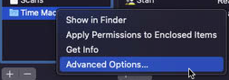
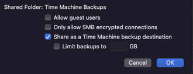

macOS Settings
Automatic Login
Enable automatic login for the MacMini user:
System Preferences -> Users and Groups -> Login Options
- Automatic Login: macmini
Auto Start Apps
Automatically start apps on MacMini user login
System Preferences -> Users and Groups -> macmini -> Login Items
- Docker
- Jellyfin
Energy Saver:
- Turn Display Off after: never
- [CHECK] Prevent your Mac from automatically sleeping when the display is off
- [CHECK] Put hard disks to sleep when possible
- [CHECK] Wake for network access
- [CHECK] Start up automatically after a power failure
- [CHECK] Enable Power Nap
Full Disk Access:
- Ensure
/bin/bashhas full disk access in System Preferences -> Security and Privacy -> Privacy
System Preferences -> Sharing
Ensure 'Computer Name' is set to MacServer
File Sharing
Add folders:
- /Users/Shared/macOS Server Shares/AllShare
- /Users/Shared/macOS Server Shares/Scans
Add volumes:
- /Volumes/Media
- /Volumes/Time Machine Backups
Enable Time Machine Backups:
Right Click Time Machine Backups -> Advanced Options -> [CHECK] Share as a Time Machine backup destination


Permissions:
For all folders and volumes:
- ‘Everyone’: Read Only
- 'AllLocalUsers': Read & Write
Remote Login
- [CHECK] Allow full disk access for remote users
- Allow access for: Only these users ->
AllLocalUsers
Remote Management
- Allow access for:
Only these users-> click '+' and add all users. - When prompted for permissions, enable everything.
- Computer Settings:
- [CHECK] Always show Remote Management status in menu bar
- [CHECK] Anyone may request permission to control screen
Remote Apple Events
- Allow access for:
All users
Content Caching
- Cache:
All content - Options
- Cache Location:
Macintosh HD - Cache size:
30 GB(change as needed)
- Cache Location: